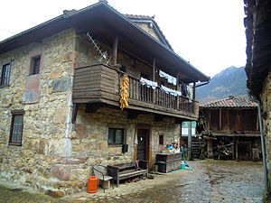
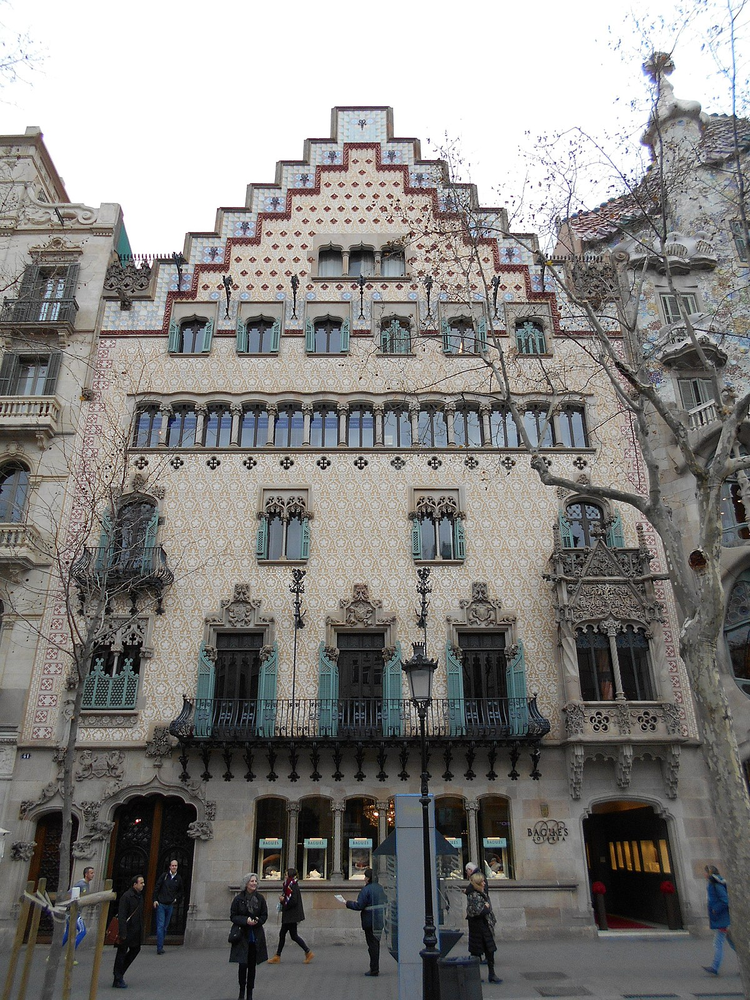
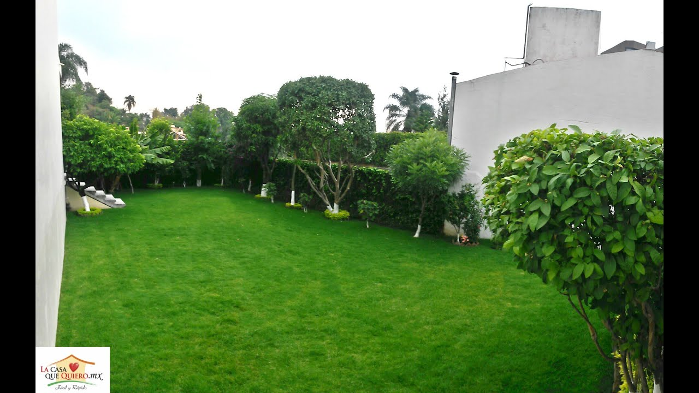

Idei case – Proiecte de case mici, cu mansarda si etaj
2020.09.21 19:06

Skip to content
Idei case
Proiecte de case mici, cu mansarda si etaj
Primary Navigation Menu Menu Case cu mansarda Case parter Case cu etaj Case din lemn Casa pas cu pas Contact GDPR & CookiesProiect vila moderna construita in stil mediteranean
2020-09-21Casele frumoase sunt binevenite aici si aproape nu exista o casa frumoasa care sa nu aiba si planurile disponibile si traduse pe acest site. Nici aceasta vila superba nu ar fi putut sa fie exclusa din colectie de mii de proiecte de case de pe www.IdeiCase.com . Arata superb, atat Vezi proiectul
Casa cu mansarda mica, moderna si ieftina! Interiorul e fabulos!
2020-09-20Inca un proiect de casa cu mansarda unde aspectul exterior de o frumusete rara este completat de o compartimentare inteligenta si de un design interior deosebit. Ramai pe site pentru a afla mai multe detalii despre acest model de casa P+M, inclusiv cat ar costa constructia acesteia. Promit imagini reale Vezi proiectul
Cas cu mansarda simpla, economica si foarte frumoasa. Un proiect deosebit
2020-09-18Casele cu mansarda sunt cele mai cautate tipuri de locuinte in zilele de astazi. Asta si din cauza faptului ca sunt foarte practice, mai putin costisitoare fata de cele cu etaj si, nu in ultimul rand, au un aspect care te cucereste. O casa nou sosita in colectia noastra de Vezi proiectul
O splendoare ce casa MICA! Pretul constructiei este INCREDIBIL
2020-09-03Nu este un titlu exagerat, chiar merita din plin cuvinte de lauda acest proiect de casa mica! Poate fi casa definitiva sau o casa de vacanta. Este o casa ieftina, rapid de construit si cu un aspect deosebit. Ramai mai departe aici pentru a afle mai multe detalii, inclusiv pretul Vezi proiectul
Proiect NOU! Model de casa simpla si eleganta cu 3 dormitoare si un living spatios!
2020-08-31Casele frumoase merita apreciate iar acest proiect recent sosit pe piata proiectelor de case mici este unul dintre acele proiecte de case care trebuie luate in calcul de catre cei care intentioneaza sa isi construiasca o casa. Te sfatuiesc sa nu ratezi niciun detaliu despre acest proiect deoarece vei regreta. Vezi proiectul
PROIECT EXCLUSIV: Casa din “Visuri la cheie” in toata splendoarea!
2020-08-26Daca ti-a placut casuta amenajata in emisiunea mai sus numita, este normal sa vrei sa vezi si proiectul mai detaliat al acesteia. Avand aici cele mai frumoase modele de case, cu planuri detaliate si multe alte imagini, era normal sa vin si cu proiectul acestei frumoase case doar cu parter. Vezi proiectul
Cea mai frumoasa casa: Proiect cu planuri si poze din interior-exterior
2020-08-26Acum nu poti sa spui ca am exagerat cu titlul! Nu-i asa ca acest proiect iti prezinta o splendoare de casa P+M ? Daca ar fi sa ii dau o nota i-as da nota zece cu felicitari pentru ca am foarte multe motive. Daca vei ramane pana la final vei Vezi proiectul
Proiect casa de poveste cu 3 dormitoare, doua bai si garaj dublu
2020-08-24Iti plac casele doar cu parter cu arhitectura de 5 stele? Cateva case de pe acest site sunt cu adevarat fabuloase iar acest proiect de casa prezinta un imobil cu adevarat fabulos care va sta la loc de cinste alaturi de acestea de acum inainte. Daca ai un teren potrivit Vezi proiectul
Casa cu mansarda mica si frumoasa. Un proiect special
2020-08-23Astazi iti voi pezenta o frumoasa casa cu mansarda cu suprafata locuibila de 115 mp si amprenta construita la sol de 88 mp. Este o casa spatioasa, simpla, cocheta si poate fi construita in orice zona, integrandu-se in peisaj cu eleganta si stilul arhitectonic cu care arhitectul a inzestrat-o. Nici Vezi proiectul
Proiect casa cu mansarda si garaj de tip DUPELX potrivit pentru doua familii
2020-08-22Sunt multe motive pentru care ti-ai dori o casa de tip duplex, nu stau aici sa ti le reamintesc. Daca totusi vrei sa le vezi intra si citeste aici avantajele construirii unei case de tip duplex. E recent articolul. Probabil ca, daca ai intrat pe acest site, chiar ai nevoie Vezi proiectul
Avantajele si dezavantajele caselor de tip DUPLEX
2020-08-21Multi spun ca locuintele duplex sunt mai ieftin de construit decat casele clasice. Altii spun ca nu ai aceeasi intimitate intr-o casa de tip duplex. Iar eu, mai ales din cauza faptului ca vreau sa aduc cateva proiecte de case tip duplex pe site, as vrea sa iti spun la Vezi proiectul
Posts navigation
1 2 … 14 NextProiecte de top
Acest site foloseste fisiere cookies Google Politica cookiesDesigned using Unos . Powered by WordPress .
- Cat mai costa sa construiesti o casa in acest an – Idei case
- Acasa - Luxor.Casa
- Casa Parfumurilor
- Casa Mea Ep 13 Online Subtitrat - Dogdugun Ev Kaderindir ...
- Case/Vile de vânzare în Braşov - Imobiliare.ro
- The Prince Of Wales's House - Accommodation & English Courses
- Casa de Asigurări de Sănătate a Municipiului București
- CASA
- Casa Trappold, Apold – Prețuri actualizate 2020
- CASA SOARELUI MURIGHIOL - Casa de vacanta in MURIGHIOL, TULCEA
- Cat mai costa sa construiesti o casa in acest an – Idei case
Imobiliare.ro este portalul în care vei găsi cele mai multe anunţuri imobiliare din Braşov, venite atât de la agenţiile imobiliare, dezvoltatori, dar şi de la particulari care preferă să îşi vândă singuri locuinţa. Ai acces la un număr impresionant de case vile de vânzare, actualizate în timp real.Găseşti atât case vile de vânzare în Braşov, cât şi case vile de ...
- Acasa - Luxor.Casa
informații pentru asigurați. date de contact casmb ***** *** transmite online *** ***** cereri/petiȚii ***** ***** verificĂ existenȚa cardului naȚional la casmb
- Casa Parfumurilor
Casa Moritz a fost construita in anul 1917 ,in stil Art Deco de catre Eduard Moritz, proprietar al Curtii de Fier Brasov in aceea perioada .Dupa 100 aceasta intra intr-o reparatie capitala si devine ceea ce este acum,pastrand frumusetea detaliilor acelei perioade atat la interior cat si la exterior.
- Casa Mea Ep 13 Online Subtitrat - Dogdugun Ev Kaderindir ...
Bun venit la Casa Razeșului! Facilitățile oferite de noi. Ultra ALLINCLUSIVE. 11 Camere disponibile. Mancare Traditionala. Calatorii in Muntii Calimani. Bar Traditional. Jacuzi in aer liber . Piscina . Restaurantul nostru. Mâncare Tradițională și un ambient plăcut.
- Case/Vile de vânzare în Braşov - Imobiliare.ro
Casa Mea Ep 13 Online Subtitrat. Urmareste aici ultimele episoade online din serialul turcesc Casa Mea / Dogdugun Ev Kaderindir ️ Casa Mea Ep 13 Online Subtitrat Acest episod este difuzat cu traducere in limba romana
- The Prince Of Wales's House - Accommodation & English Courses
Casa. All Products (445) 3,6,9 lei HP (5) ALTE CHESTII - Uite ce-i nou in magazin (33) Black Friday 2017 dama minis 20 (1) Black Friday 2017 dama minis 50 (5) Black Friday 2017 minis altele 50 (4) Black Friday 2017 minis altele 80 (2) Black Friday 2017 minis (13) Colectie Noua (6) casa-si-gradina (238) colectie-femei-barbati (375) black-friday ...
- Casa de Asigurări de Sănătate a Municipiului București
Casa Trappold se află în Apold și are un restaurant, un bar, un lounge comun și o grădină. Facilitățile oferite de proprietate includ o recepție deschisă nonstop, o bucătărie comună și WiFi gratuit în toate zonele sale.
- CASA
Casa Parfumurilor acopera multiple segmente de parfum ambiental: casă, maşină, birou, clădiri. Oferim servicii de Aroma Marketing si creare de Parfum
- Casa Trappold, Apold – Prețuri actualizate 2020
Donate & Support Texas CASA. A donation to Texas CASA is an investment in Texas’ future. With your gift to Texas CASA, you can help the CASA program(s) both in your community AND around the state to provide the very best volunteer advocacy for children and families involved in the child welfare system.
- CASA SOARELUI MURIGHIOL - Casa de vacanta in MURIGHIOL, TULCEA
Luxor Casa ofera mobila de calitate premium, accesorii de design interior si corpuri de iluminat. Viziteaza magazinul online sau showroom-ul din Ploiesti.
Imobiliare.ro este portalul în care vei găsi cele mai multe anunţuri imobiliare din Braşov, venite atât de la agenţiile imobiliare, dezvoltatori, dar şi de la particulari care preferă să îşi vândă singuri locuinţa. Ai acces la un număr impresionant de case vile de vânzare, actualizate în timp real.Găseşti atât case vile de vânzare în Braşov, cât şi case vile de ...
informații pentru asigurați. date de contact casmb ***** *** transmite online *** ***** cereri/petiȚii ***** ***** verificĂ existenȚa cardului naȚional la casmb
Casa Moritz a fost construita in anul 1917 ,in stil Art Deco de catre Eduard Moritz, proprietar al Curtii de Fier Brasov in aceea perioada .Dupa 100 aceasta intra intr-o reparatie capitala si devine ceea ce este acum,pastrand frumusetea detaliilor acelei perioade atat la interior cat si la exterior.
Bun venit la Casa Razeșului! Facilitățile oferite de noi. Ultra ALLINCLUSIVE. 11 Camere disponibile. Mancare Traditionala. Calatorii in Muntii Calimani. Bar Traditional. Jacuzi in aer liber . Piscina . Restaurantul nostru. Mâncare Tradițională și un ambient plăcut.
Casa Mea Ep 13 Online Subtitrat. Urmareste aici ultimele episoade online din serialul turcesc Casa Mea / Dogdugun Ev Kaderindir ️ Casa Mea Ep 13 Online Subtitrat Acest episod este difuzat cu traducere in limba romana
Casa. All Products (445) 3,6,9 lei HP (5) ALTE CHESTII - Uite ce-i nou in magazin (33) Black Friday 2017 dama minis 20 (1) Black Friday 2017 dama minis 50 (5) Black Friday 2017 minis altele 50 (4) Black Friday 2017 minis altele 80 (2) Black Friday 2017 minis (13) Colectie Noua (6) casa-si-gradina (238) colectie-femei-barbati (375) black-friday ...
Casa Trappold se află în Apold și are un restaurant, un bar, un lounge comun și o grădină. Facilitățile oferite de proprietate includ o recepție deschisă nonstop, o bucătărie comună și WiFi gratuit în toate zonele sale.
Casa Parfumurilor acopera multiple segmente de parfum ambiental: casă, maşină, birou, clădiri. Oferim servicii de Aroma Marketing si creare de Parfum
Donate & Support Texas CASA. A donation to Texas CASA is an investment in Texas’ future. With your gift to Texas CASA, you can help the CASA program(s) both in your community AND around the state to provide the very best volunteer advocacy for children and families involved in the child welfare system.
Luxor Casa ofera mobila de calitate premium, accesorii de design interior si corpuri de iluminat. Viziteaza magazinul online sau showroom-ul din Ploiesti.
  